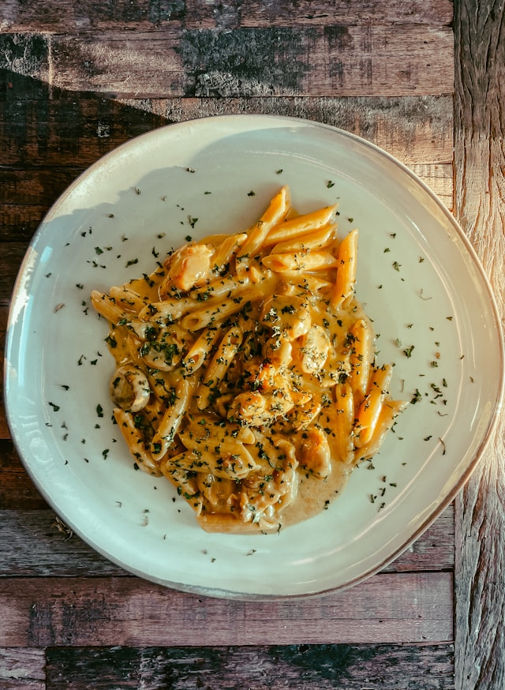

Home
Chicken Curry Pasta

Photo on Unsplash
Let's cook some pasta!
It's time to cook some delicious pasta! It's as simple as it gets. So, get ready to make your hot, creamy, savory chicken curry pasta in a snap.
Ingredients:
- 75g to 80g penne pasta
- 100g chicken breast or thigh, cut into bite-sized cubes
- 3-4 white button mushrooms, sliced into thick rounds
- 1 small clove of garlic, finely minced
- 1 tablespoon olive oil or unsalted butter
- 1 to 1.5 teaspoons mild curry powder
- 80ml heavy cream or cooking cream
- 2-3 tablespoons pasta water
- Salt and freshly cracked black pepper to taste
- 1 tablespoon Fresh parsley, very finely chopped
Steps:
- Boil the penne pasta until al dente, then drain it and reserve a splash of pasta water.
- Heat oil or butter in a skillet, add salt and black pepper, sear the cubed chicken until golden and cooked through, then set aside.
- Sauté the sliced mushrooms and minced garlic in the same skillet until soft and fragrant.
- Stir in the curry powder for 20 seconds, then pour in the heavy cream and simmer until thickened.
- Toss the chicken and pasta back into the sauce, using reserved pasta water to adjust the glossiness.
- Plate the pasta and garnish generously with finely chopped fresh parsley.